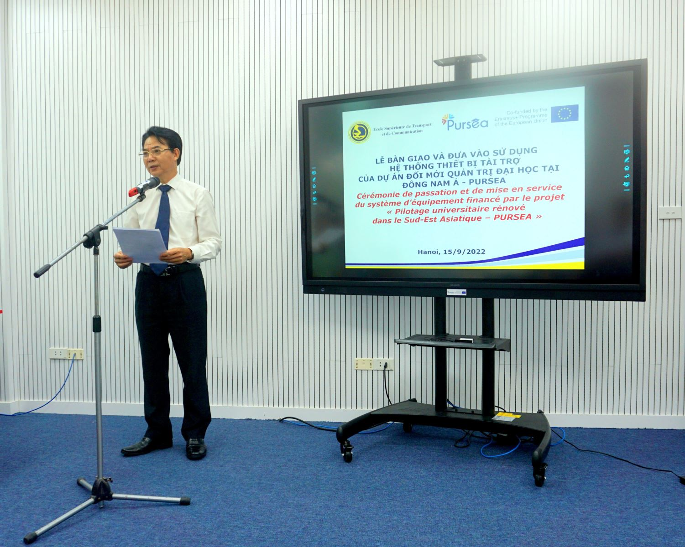
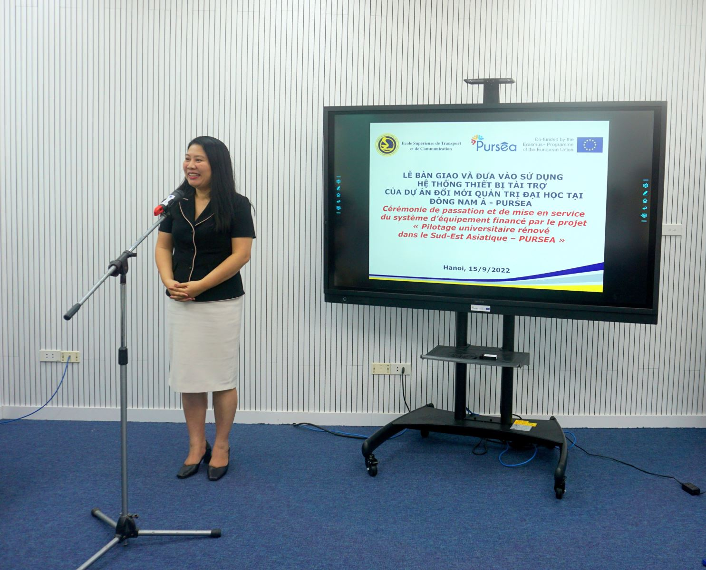
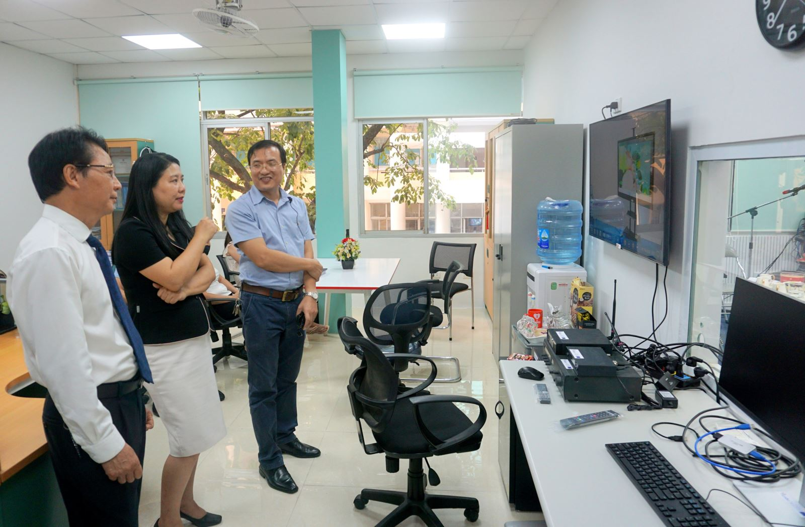

Lễ bàn giao và đưa vào sử dụng hệ thống thiết bị tài trợ của dự án Đổi mới Quản trị đại học tại Đông Nam Á - PURSEA
Ngày 15/9/2022, tại Trường Đại học Giao thông vận tải đã diễn ra Lễ bàn giao và đưa vào sử dụng hệ thống thiết bị tài trợ của dự án Đổi mới Quản trị đại học tại Đông Nam Á - PURSEA. Buổi lễ có sự sự hiện diện của các khách mời là TS. Nguyễn Thị Cúc Phương - Điều phối viên dự án PURSEA, Phó Hiệu trưởng Trường ĐH Hà Nội và bà Nguyễn Thị Thuý Nga - Đại diện tổ chức Đại học Pháp ngữ-AUF. Về phía Trường ĐH GTVT có sự tham dự của PGS.TS. Nguyễn Văn Long-Chủ tịch Hội đồng, Đại diện các đơn vị trong trường: Trung tâm Đào tạo trực tuyến, Phòng Hợp tác quốc tế và Nghiên cứu phát triển, Phòng Thiết bị quản trị và đại diện Tiểu ban thực hiện dự án.
Việc đầu tư mua sắm trang thiết bị được thực hiện theo kế hoạch tổng thể của dự án để phục vụ công tác giảng dạy trực tuyến theo Chiến lược chung phát triển nhà trường Giai đoạn 2021-2025. Các thiết bị này, trước hết sẽ giúp triển khai, hoàn thành các mục tiêu của dự án của trường ĐHGTVT, đồng thời cũng sẽ trở thành nguồn lực vật chất cơ bản và lâu dài cho Trung tâm Đào tạo trực tuyến của Nhà trường. Phát biểu tại buổi lễ, PGS.TS. Nguyễn Văn Long-Chủ tịch Hội đồng trường đã nhấn mạnh việc phát triển hình thức đào tạo trực tuyến là một trong những giải pháp chính, có tính trọng điểm để nâng cao chất lượng và đa dạng hoá các hình thức đào tạo tại trường ĐHGTVT, đồng thời cũng gửi lời cảm ơn tới Điều phối viên trưởng của dự án và Tổ chức AUF đã quan tâm và hỗ trợ nhà trường trong công tác triển khai và hoàn thiện dự án; đóng góp rất thiết thực vào sự phát triển chung của trường ĐHGTVT. TS. Nguyễn Thị Cúc Phương - Điều phối viên dự án cũng đề cao nỗ lực làm việc của nhóm thực hiện dự án và nhấn mạnh tầm quan trọng của đào tạo trực tuyến, một trong những phương thức giảng dạy chính của tương lai, đặc biệt trong thời đại công nghiệp 4.0.
Việc bàn giao và đưa vào sử dụng hệ thống thiết bị phục vụ đào tạo trực tuyến đánh dấu bước tiến mới trong việc thực hiện chiến lược của Nhà trường về phát triển và đa dạng hoá các loại hình đào tạo, đồng thời cũng là sản phẩm thể hiện sự phát triển bền vững của mối quan hệ hợp tác giữa trường ĐHGTVT và tổ chức đại học Pháp ngữ nói riêng, với các tổ chức giáo dục quốc tế nói chung.
Video bàn giao studio: https://drive.google.com/file/d/1PGaSMBd9y4Ii_rtOeIStyf1Vjw97BqmU/view?usp=sharing
Một số hình ảnh về buổi lễ
  
Le soutien apporté par la Commission européenne à la production de la présente publication ne vaut en rien approbation de son contenu, qui reflète uniquement le point de vue des auteurs ; la Commission ne peut être tenue responsable d’une quelconque utilisation qui serait faite des informations contenues dans la présente publication
Dự án này được tài trợ bởi Ủy ban Châu Âu. Tác giả bài viết chịu trách nhiệm về nội dung bài viết. Ủy ban Châu Âu không chịu trách nhiệm về việc sử dụng và truyền tải những nội dung có trong bài viết này.
Đăng bởi: vnlinh